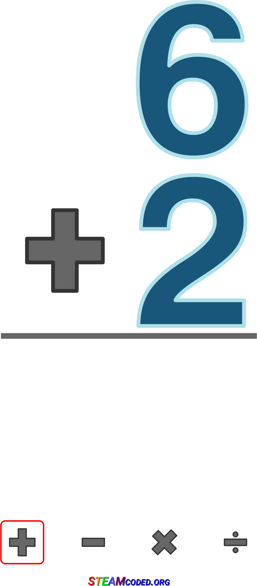

Live DevLog
| 27 Apr 2018 |
| 13:10:59 | STATUS |  Right, the time has come to test everything out... Right, the time has come to test everything out... |
| 12:55:03 | LINK |  Link back to the forest in order to make the player able to resume the game. Link back to the forest in order to make the player able to resume the game. |
| 12:54:26 | MAP |  Resume spot in forest Resume spot in forest |
| 12:50:42 | NOTE |  The sprites of the people in this scene are not yet present.... The sprites of the people in this scene are not yet present.... |
| 12:50:22 | SCRIPT |  Scenario should run Scenario should run |
| 12:48:33 | JCR6 |  Rebuilding music files Rebuilding music files |
| 12:48:08 | CONFIG |  Configured music building script Configured music building script |
| 12:37:00 | SCRIPT | Music Scripts set up |
| 12:33:29 | MUSIC |  "Comfortable Mystery" by Kevin McLeod will be played during the cutscene "Comfortable Mystery" by Kevin McLeod will be played during the cutscene |
| 12:26:03 | STUDY |  I need to see how my music builder script was set up... Yeah mind me, it was a while ago, ok? I need to see how my music builder script was set up... Yeah mind me, it was a while ago, ok? |
| 12:06:28 | SCRIPT | Skeleton for Blue Palace |
| 12:00:13 | LINK | Link to cut-scene map. As you can guess this is a part of a dungeon were Ryanna will eventually get later in the game |
| 11:41:52 | FIXED |  Minor fixups Minor fixups |
| 11:36:03 | ENHANCEMENT |  Added the possibility to immediately spawn the player while loading a map Added the possibility to immediately spawn the player while loading a map |
| 26 Apr 2018 |
| 00:30:42 | BACKUP |  Run.... You'd think with that little work, does it matter? Run.... You'd think with that little work, does it matter?Well I've dealt with tons of data elsewhere, ya know |
| 25 Apr 2018 |
| 17:04:35 | SCENARIO |  Adaptions Adaptions |
| 16:29:21 | ART |   Drawn a portrait which I will not publicly show in this devlog, for obvious reasons, trust me... You'll understand once you say it in game... Drawn a portrait which I will not publicly show in this devlog, for obvious reasons, trust me... You'll understand once you say it in game... |
| 16:28:41 | PHANTASAR |  And that also went on And that also went on |
| 16:28:15 | GO |  Set up the current version of "Who is the Virus?" Set up the current version of "Who is the Virus?" |
| 21 Apr 2018 |
| 19:17:39 | STATUS | Well, and that brings us up-to-date, I think |
| 19:17:06 | GITHUB |  Repository updated Repository updated |
| 19:16:12 | LOVE2D |  Forum Devlog update Forum Devlog update |
| 19:13:17 | GAMEJOLT |  Devlog update Devlog update |
| 19:08:54 | ALPHA |  Updated Updated |
| 18:48:33 | BACKUP | The daily backup has begun |
| 18:46:50 | DEBUG |  Anna's debug tag turned off... AGAIN! Anna's debug tag turned off... AGAIN! |
| 17:52:52 | FIXED | Time of achievement is now properly put in the log |
| 17:51:08 | FIXED | #100 -- but a little subbug came to light |
| 17:46:52 | TEST |  Take XIV Take XIV |
| 17:46:43 | EXPERIMENT |  I hope this fixes #100 I hope this fixes #100 |
| 17:43:27 | SCREENSHOT |  |
| 17:39:30 | TEST | Take XIII for more details from Anna |
| 17:39:19 | DEBUG | This can't be |
| 17:37:22 | ANALYSIS |  According to the log Anna has succesfully processed the request... Why does the site tell differently? According to the log Anna has succesfully processed the request... Why does the site tell differently? |
| 17:30:51 | DEBUG | Extra line to figure out #100 |
| 17:27:14 | FAILURE |  Why does Mac often produce a black picture when taking screenshots fullscreen? Why does Mac often produce a black picture when taking screenshots fullscreen? |
| 17:21:34 | TEST | Take XII |
| 17:21:30 | FIXED | Code typo |
| 17:18:56 | TEST | Take XI |
| 17:18:50 | FIXED | Y coordinate issue achievement announcements |
| 17:18:23 | DEBUG | Extra line for me to eliminate a few impossibilities about #100 before I actually go fixing it |
| 17:16:01 | BUG |  #100 #100 |
| 17:10:38 | DEBUG | But I need to figure out why it doesn't show, though.... |
| 17:09:02 | BUG | for some reason the achievement line doesn't show, but the error popping up, at least proves the required routine's been called... |
| 17:04:28 | FIXED | As a result that issue SHOULD be fixed... But we'll see if that's true or not... :-/ |
| 17:04:08 | TECHNO |  Well Anna basically doesn't need it... Anna can only send a warning in case you'd be playing an outdated version, but that is not really as issue in this game as it doesn't use the really complicated parts of Anna. Well Anna basically doesn't need it... Anna can only send a warning in case you'd be playing an outdated version, but that is not really as issue in this game as it doesn't use the really complicated parts of Anna. |
| 17:03:31 | REMOVED |  I've removed the mkl reference as I decided not to use it... yet.... I've removed the mkl reference as I decided not to use it... yet.... |
| 17:01:16 | TEST | That is the result of take X |
| 17:01:09 | BUG | The link to Anna however did not |
| 17:00:56 | CONFIRMED |  The link to Game Jolt WORKS!!!! The link to Game Jolt WORKS!!!! |
| 16:56:46 | FIXED | I think I fixed this |
| 16:52:47 | DEBUG | I've added an extra line in order to find out how the fuck the nil can happen |
| 16:42:48 | BUG | "attempt to concatenate local 'trophy_id' (a nil value)" ???? Not a chance in hell.... Now why does that happen? |
| 16:42:00 | BUG | The game crashses though when the achievement should be given, and I wonder why |
| 16:29:10 | CONFIRMED | No more bugs from Anna, and the login appears to be working... YAY! |
| 16:26:09 | TEST | Take IX |
| 16:26:02 | DONE |  Some extra settings set right Some extra settings set right |
| 16:14:53 | DEBUG | debugmode for Anna turned off |
| 16:07:55 | CONFIRMED | AND NOW THE SERVER SIDE CODE WORKS |
| 16:06:01 | TEST | Take VIII |
| 16:00:29 | FIXED | Removed one line that was no longer needed, and that fixes this issue (bad query) in the process. |
| 15:57:16 | COCKROACH |  Database failure!!!! (on the Anna server) Oh crap! Database failure!!!! (on the Anna server) Oh crap! |
| 15:53:59 | TEST | Take VII (and then to think I haven't yet come to the achievements themselves what these tests are all about). |
| 15:53:35 | FIXED | A server side parse error |
| 15:52:43 | ANNA |   Now I deliberaly allowed Anna to ban me just to see if everything works, and it appears, it does not work entirely... Now I deliberaly allowed Anna to ban me just to see if everything works, and it appears, it does not work entirely... |
| 15:51:37 | TEST | Take VI |
| 15:51:28 | FIXED |  cosmetic debug fix cosmetic debug fix |
| 15:48:53 | ANNA | Bans are now easier for me to trace... That is the bans placed by Anna.... |
| 15:44:34 | ANNA | And some secret data is now handled differently, and that's all you need to know :P |
| 15:41:59 | ANNA | Date of posts Anna puts to people's accounts is now visible. I need to note, the date wasn't even stored before. All older messages will be set to June 19th, 1975, which is my own date of birth. :P |
| 15:28:34 | COSMETIC |  More proper way to respond More proper way to respond |
| 15:26:57 | TEST | Take V |
| 15:26:52 | ANNA | Oh yeah, I got to push the server side code first before I start the test, doh! |
| 15:25:49 | DEBUG | It's not a real issue now as I can now test if the game works properly with a banned Anna account (because the game itself should still be playable except for throwing a warning). |
| 15:25:12 | ANNA | Alright, I see Anna banned me, and the reason is why she did so is properly logged.... This is because the database Anna uses missed some data, so she acted the way she should on that one. |
| 15:22:10 | FIXED | Well that issue's been fixed, but there is something else in the data I don't like... |
| 15:20:16 | ANALYSIS | Well the data Anna now provided me leaves no mistake about it... A server side bug.... Let's dig into the server side code of Anna then |
| 15:17:47 | DEBUG | Anna will now dump out everything that is normally secret, but this way I can try to find out what is happening here |
| 15:12:22 | ANALYSIS | It appears this is an internal error... The error indicates the data Anna sends is not properly retrieved... This could be a server side bug |
| 15:11:32 | SITE |  Added tag ANALYSIS Added tag ANALYSIS |
| 15:09:00 | TEST | Take IV |
| 15:08:55 | DEBUG | Now THIS may provide some answers... I hope! |
| 15:05:10 | TEST | Take III is now run in a special test setup so i can see what Anna actually reports back |
| 15:00:28 | UNIX |  A bit of data transfers A bit of data transfers |
| 14:55:08 | PROBLEM | Still no good? |
| 14:53:57 | TEST | Not a single line of code changed, and yet I already go to TAKE II |
| 14:53:44 | FIXED | I hope.... |
| 14:50:11 | STATUS | Well now I have to start this setup all over.... :-/ |
| 14:47:13 | SOLVED |  It appears to be a typo in my credentials (doh!) It appears to be a typo in my credentials (doh!) |
| 14:37:11 | PROBLEM | Anna doesn't accept my login.
I'm not sure if this is a bug or if my credentials are not in order, so I need to find out. |
| 14:36:47 | SITE | Added tag PROBLEM |
| 14:34:08 | TEST | Everybody! Get ready for TAKE I! |
| 14:33:55 | ANNA | Right, that Anna stuff has been set right now.... |
| 14:30:10 | FIXED | As well as a mixed up issue I also found |
| 14:30:00 | FIXED | That's been fixed |
| 14:29:35 | BUG | A bug in the debugging system.... Irony, eh? |
| 14:19:12 | NOTE | Before I can start testing I gotta set some stuff right, as a few things concerning Anna have not yet been properly taken care of, and that needs to be done first! |
| 13:59:22 | DEBUG | Variable manipulation for console usage |
| 13:53:22 | STATUS | Well that's sets that part in order.... The feature to actually VIEW the achievements you scored will have to wait, also due to the cutscene that is not yet finished, stuff is hard to test here... (unless I "brick" things).... |
| 13:50:00 | TODO |  #99 #99 |
| 13:48:24 | LINK | Used to linkup with main routine, making sure achievements always show... At least during normal flowthroughs, as some events, like textboxes and spell animates can 'interrupt' this, only to resume after... |
| 13:46:12 | ENHANCEMENT | Extra features on draw callback killer |
| 13:40:05 | DONE | ScrollThrough show routine |
| 13:16:38 | LINK | Linked to achievement routines |
| 13:04:21 | DONE | ScrollThrough entry creator set up |
| 12:42:32 | GO | Of course, this required me to recompile Ryanna.... (How obvious since I made it a Ryanna core feature). :P |
| 12:41:26 | ENHANCEMENT | Secure_Each |
| 12:36:22 | LINK | Linkup code written for the 'ScrollThrow' routine.
It'll be used to announce achievements and also for the ending credits.... |
| 12:32:31 | DEBUG | A proper error crasher has been written in order to catch false achievement codes |
| 12:32:03 | LINK | I've linked the achievement database to the actual script |
| 12:25:35 | DONE | My tosti is in the toaster, so now we wait I suppose |
| 12:16:09 | TODO | And let's now make a tosti.... I'm hungry and I just realized I haven't yet eaten today....
You don't have to tell me I'm terrible, because I already know ;) |
| 12:15:17 | CLEANUP |  Let's clean up my IDE from some unwanted source codes... It was getting hard to keep a proper view on matters.... Let's clean up my IDE from some unwanted source codes... It was getting hard to keep a proper view on matters.... |
| 12:13:58 | NOTE | Now BEFORE I start testing I think it's best to finish what I set up... With "under the hood" code that normally works best to get everything in order... Well in this case it does... |
| 12:13:04 | LINK | Now I attached the "Ryanna in disguise" achievement properly to the event in question.... |
| 12:09:35 | LINK | The linkup code to Anna has now been written. I had to do things differently as stuff is not entirely taken up the same way I normally would. That has to do with some efficiency issues in the building of all the linkup code. So I hope everything works as it should.... |
| 11:54:21 | LINK | The Linkup code to Game Jolt has now been written, however this has not yet been tested, so there's no telling how things will go from now on :-/ |
| 11:42:45 | ANNA | link codes entered... Link itself not yet established |
| 11:42:21 | GAMEJOLT | link codes entered... Link itself not yet established |
| 11:39:17 | FIXED | Cosmetic fix in my dev scripts |
| 11:38:08 | ACHIEVEMENT |  "I only wish to catch fish, so juicy sweet" -- in game "I only wish to catch fish, so juicy sweet" -- in game |
| 11:35:23 | ACHIEVEMENT | "Rock and pool, it's nice and cool, so juicy sweet." -- in game |
| 11:33:50 | ACHIEVEMENT | "Transformer, Ryanna in disguise" -- In game |
| 11:28:31 | NOTE | That does not yet send the data to Game Jolt nor to Anna... This is only a readout |
| 11:27:34 | DONE | Link up data loaded |
| 11:25:28 | STUDY | A bit of study to the data retrieval |
| 11:24:18 | NOTE | It is not yet possible to test all this, so I must be sure everything's alright |
| 11:22:05 | CONFIRMED | Ryanna picks that up properly |
| 11:21:53 | DONE | Well that's done |
| 11:13:27 | RYANNA |  But now the data needs to be imported for use in Ryanna But now the data needs to be imported for use in Ryanna |
| 11:13:09 | DONE | All data properly exported |
| 10:56:38 | DONE | Data entered and saved, but now to export this into the "secret database" the game itself will use |
| 10:22:20 | DONE | Script can get me the linkup codes |
| 10:06:14 | VERIFIED |  The linking script is now able to detect all achievements properly... Now the link up data itself has to be written.... The linking script is now able to detect all achievements properly... Now the link up data itself has to be written.... |
| 10:01:43 | RYANNA | That feature was planned anyway, and now that I had to check that script once more, it was only an easy way to go.... ;) |
| 10:01:10 | ENHANCEMENT | URANGE functionality added to the Ryanna base scripts |
| 09:48:57 | LINK | Well, I'll keep it to these three for now, although a few more achievements do exist, but now I can begin to write a linking script ;) |
| 09:47:11 | ACHIEVEMENT | "Tod ist mein leben" -- in game |
| 09:46:50 | ACHIEVEMENT | "I beat this game, and all I got was this lousy T-shirt" -- in game |
| 09:46:30 | ACHIEVEMENT | "Get away from me creep" -- in game |
| 09:37:39 | DATABASE |  Achievement database set up Achievement database set up |
| 09:32:08 | SCRIPT | A few markers for the network access for achievements |
| 09:28:37 | LUA |  Code refresh Code refresh |
| 20 Apr 2018 |
| 19:18:47 | STATUS | So far... for now |
| 19:18:39 | ALPHA | Updated |
| 19:18:18 | BACKUP | Done |
| 17:38:00 | STATUS | Well with this I can work out the cutscene a bit more, but unfortunately that won't be for today, as my time's up... |
| 17:33:23 | MAP | I've added the secret spot "HideRyanna"....
It does what the name implies, thanks to the dominance system Kthura works with....
It's just a dirty method to prevent system crashes.... |
| 17:32:42 | MAP | I've put the carpets in the cutscene room |
| 17:25:18 | FIXED | File error |
| 17:20:09 | GENERATION |  The new pics have succesfully been generated The new pics have succesfully been generated |
| 16:48:56 | BUG | I guess there's a bug in GitHub preventing me from updating PhantasarProductions/cynthia#41 |
| 15:44:09 | STATUS | Due to some "real-life" stuff that will have to wait till later, though.... |
| 15:41:58 | ART | I want to recycle the carpets used in The Fairy Tale REVAMPED, however they are faked animations, that never run frozen in one frame. The approach used for that is not supported by the LÖVE version of Kthura, neither do I have plans to include it, as I deprecated that feature to insure compatibility with future game engines as much as possible... I guess I'll need a quick program to "chop it all up".... ;) |
| 15:15:41 | ANNA | However I did prepare Anna for the achievement system as that isone of the things scheduled to be added soon.... |
| 15:15:07 | CYNTHIA |  Today I worked most of all on Cynthia Johnson Today I worked most of all on Cynthia Johnson |
| 18 Apr 2018 |
| 16:17:58 | PHANTASAR | And another chapter done |
| 16:17:38 | ALPHA | Yeah yeah, I updated this too.... |
| 16:17:29 | BACKUP | running... For what good THAT will do on a day like this |
| 16:15:45 | SCENARIO | At least I could write the scenario for the cutscene. I'm afraid the rest will have to come later |
| 16:04:33 | OFFTOPIC |  Too bad some real life stuff took me from working on the game today, sorry Too bad some real life stuff took me from working on the game today, sorry |
| 12:20:38 | GO | I fixed some parse errors in the "Who is the Virus" project |
| 15 Apr 2018 |
| 12:32:43 | ALPHA | Will be updated soon |
| 12:32:35 | CONFIG | Xtra config |
| 12:30:20 | BACKUP | Is running |
| 12:28:46 | STATUS | Unfortuantely that will be all for now, but at least I can start working on the actual scenario in this cutscene now, although more artwork is also required here... |
| 12:13:09 | MAP | A skeleton map has been set up for the cutscene |
| 12:09:17 | FIXED | A few file fixes |
| 12:07:57 | ART | General side wall textures |
| 12:01:26 | ART | Textures for cutscene |
| 11:47:43 | OFFTOPIC | I did set up a poll about voice acting in Star Story should a new version be made. |
| 14 Apr 2018 |
| 17:10:13 | OFFTOPIC | Well Something came in my way today, and given the time now I don't deem it fruitful to do some work today... Next Sunday my time is also too limited, but maybe there are a few things I can get done, who knows... |
| 01:31:00 | SITE | "Under the hood" config |
| 01:27:02 | STATUS | time to call it a day.... See ya later, folks! |
| 01:26:48 | GITHUB | All stuff pushed |
| 01:24:39 | BACKUP | Done |
| 01:24:30 | ALPHA | Updated |
| 13 Apr 2018 |
| 16:36:13 | CONFIRMED | That all works now |
| 16:31:21 | TEST | Okay, a test |
| 16:31:16 | GAMEJOLT | Duties done |
| 16:09:06 | CONFIRMED | Although the fact that this nil error popped up DOES mean something good. It could only happen if the scheduler worked, so at least we know tha tworks now :) |
| 16:08:12 | FIXED | Nil references |
| 16:03:53 | FAILURE | ANd I quit the game, but that is ignored and in stead Google Chrome closes.... SPOOKY! |
| 16:03:30 | FAILURE | False game launch |
| 15:04:49 | STATUS | And I'll resume this later; |
| 15:04:45 | FIXED | One tiny nil |
| 14:59:27 | STATUS | Testing is now in order, but I am expecting a visitor any moment now, so this can be a bit problematic... Luckily this isn't THAT complex ;) |
| 14:58:47 | DEBUG | Fake error set up forcing the game to crash... This is just a safety measure which will be deactivated as soon as the entire cutscene works the way it's intended |
| 14:57:54 | SCRIPT | A quick script has been set up in order to test the scheduler and it will also show the "MEANWHILE" text |
| 14:49:02 | FAILURE | I guess I should have looked better... Eclipse does not appear to like the long size of a Kthura map export script .... XD (Can't blame it).... |
| 14:46:58 | LINK | Linked all this to the main flow |
| 14:46:06 | SCRIPT | Scheduling running written |
| 14:41:39 | SCRIPT | Scheduling functions and tables is now possible |
| 14:35:29 | SCRIPT | Schedule variable declared |
| 14:33:08 | GAMEJOLT | I did my duties here |
| 13:22:20 | STATUS | That sorts out the artistic pre-work, as to make stuff entirely possible I will now need to get the "schedule" routine to work....
Wish me luck |
| 13:20:14 | MAP | A "fake" room created used to show the "Meanwhile" screen |
| 13:11:17 | ART |  |
| 12:52:00 | ENHANCEMENT | I've enhanced my listout routine for JCR6 |
| 11:18:25 | PHANTASAR | New Chapter |